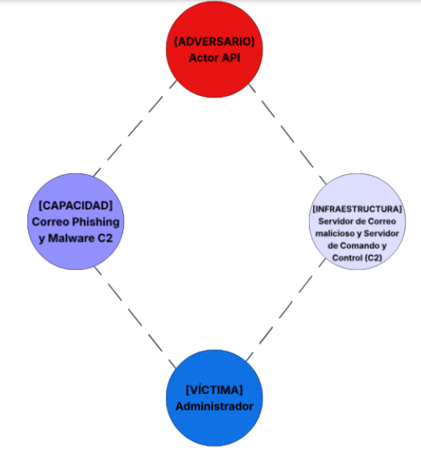
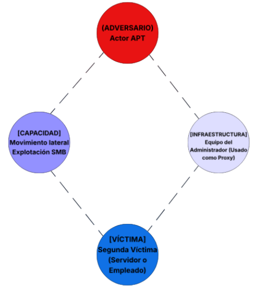
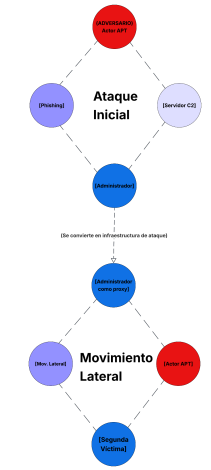

El Modelo del Diamante para el análisis de intrusiones es un marco formal desarrollado por Sergio Caltagirone, Andrew Pendergast y Christopher Betz en 2013. Este modelo describe cada incidente de intrusión cibernética a través de cuatro elementos interconectados dispuestos en forma de diamante: Adversario, Capacidad, Infraestructura y Víctima. Su principal fortaleza es permitir un análisis estructurado de la inteligencia sobre amenazas basado en las relaciones entre estos cuatro ejes, facilitando la correlación de eventos y la atribución de ataques.
En esta actividad aplicamos el modelo diamante a un escenario realista de infección por malware con comunicación a servidores de Comando y Control (C2), así como a un caso de ataque APT con pivoting entre dos víctimas. Adicionalmente, relacionamos el modelo con la Cyber Kill Chain de Lockheed Martin para comprender cómo se integran ambos marcos en el análisis de incidentes. Las referencias bibliográficas incluidas al final del documento sirven como base para profundizar en estos estándares de la industria.
Integrantes:
Docente: Mtro. Servando López Contreras
Grupo: T46A
Fecha: Marzo 2026
Asignatura: CNO V – Seguridad Informática | Actividad 18: Modelo Diamante
El Modelo del Diamante para el análisis de intrusiones describe cada incidente a través de cuatro elementos interconectados dispuestos en forma de diamante, permitiendo un análisis estructurado de la inteligencia sobre amenazas basado en las relaciones. Explora el diagrama interactivo a continuación seleccionando cada nodo:
| Elemento | Descripción | Ejemplo Práctico |
|---|---|---|
| Adversario | El actor o grupo malicioso responsable de la intrusión. Puede ser desde un grupo APT concreto hasta un actor desconocido identificado por sus patrones de comportamiento. | Un grupo de cibercrimen con motivaciones financieras o un estado-nación buscando espionaje. |
| Capacidad | Describe las herramientas, técnicas y procedimientos (TTP) utilizados por el adversario para ejecutar el evento. | Uso de un malware tipo Ransomware, scripts en PowerShell o un exploit de día cero (0-day). |
| Infraestructura | Son los recursos lógicos y físicos que el adversario utiliza para entregar la capacidad y comunicarse. | Servidores de Comando y Control (C2), dominios maliciosos registrados o direcciones IP de una botnet. |
| Víctima | El objetivo del ataque. Puede ser una organización, un usuario específico, una dirección IP o un activo crítico. | El servidor de bases de datos de una institución financiera o el endpoint de un empleado administrativo. |
Escenario: Una organización detecta comportamiento anómalo en un equipo. El análisis revela lo siguiente (sigue el flujo de eventos en nuestro rastreador):
| Meta característica | Descripción del evento |
|---|---|
| Marca de tiempo | Fecha y hora exacta registrada en los logs de red y del antivirus (necesaria para la línea del tiempo). |
| Fase | Command and Control (C2) y Actions on Objectives. El malware ya está instalado y busca instrucciones externas. |
| Resultado | Éxito parcial/total. El malware se ejecutó y logró contactar a la infraestructura del adversario; existe riesgo de exfiltración. |
| Dirección | El tráfico fluye desde la red interna (víctima) hacia las IPs externas (infraestructura). |
| Metodología | Beaconing. Comunicación persistente y periódica entre el host infectado y el C2 para recibir comandos. |
| Recursos | Capacidad del malware para resolver nombres de dominio (DNS) y establecer túneles de comunicación cifrada. |
1. ¿Quién es el adversario en este escenario?
Aunque la identidad real suele ser difícil de atribuir, el adversario se define por el actor o grupo de amenazas identificado mediante la geolocalización de las IPs y los datos de registro de los dominios (WHOIS). Técnicamente, se describe como el Threat Actor con la infraestructura de C2 activa.
2. ¿Cuál es la capacidad utilizada?
La capacidad es el malware persistente detectado en los endpoints. Esta incluye funciones de evasión y, específicamente, la capacidad de comunicación mediante balizas (beaconing) para contactar con los dominios de Comando y Control (C2).
3. ¿Qué tipo de infraestructura se emplea?
Se emplea una Infraestructura de Comando y Control (C2) de nivel 2. Esta consiste en nombres de dominio maliciosos y direcciones IP externas que actúan como puntos de recepción de datos y envío de instrucciones.
4. ¿Quién es la víctima primaria?
La víctima primaria es el host inicial donde se detectó el malware. Sin embargo, en el modelo diamante, la organización completa es considerada la víctima de nivel superior, mientras que los activos específicos (servidores/equipos) son las víctimas de nivel técnico.
5. ¿Existe evidencia de movimiento lateral?
Sí. El hecho de que los logs muestren "múltiples hosts" conectándose a las mismas IPs de C2 sugiere que el malware se ha propagado internamente (movimiento lateral) o que se realizó un despliegue masivo tras comprometer un controlador de dominio o mediante herramientas de administración.
Explora las 7 fases de un ciberataque modeladas bajo el estándar de Lockheed Martin. (Pasa el cursor por las tarjetas para analizar cada fase).
A continuación se asignan las fases de la Kill Chain a los eventos del escenario analizado:
| Evento | Fase Kill Chain |
|---|---|
| Detección de malware | Entrega (Delivery): El atacante transmite el vector de ataque al objetivo (correo malicioso). |
| Envío de phishing | Explotación / Instalación: El código malicioso se activa aprovechando una vulnerabilidad o acción del usuario. |
| Conexión a C2 | Comando y Control: El sistema comprometido abre un canal de comunicación con el atacante. |
| Ejecución del malware | Post-Intrusión: No es una fase del atacante, sino el punto de interrupción (Break the Chain) por parte de la defensa. |
Escenario tipo APT: Phishing dirigido a administrador → Ejecución de malware → Conexión a C2 → Uso del host comprometido como proxy → Ataque a segunda víctima.
Descripción: Un administrador (Víctima 1) recibe un correo de phishing dirigido. Al ejecutar el archivo, se instala un malware que establece una conexión persistente a un servidor C2.

Descripción: El atacante utiliza el host del administrador como un Proxy para ocultar su rastro y saltar las protecciones perimetrales. Desde aquí, lanza un ataque hacia la base de datos o el servidor financiero (Víctima 2).
Ejes del Diamante: El host de la Víctima 1 ahora forma parte de la Infraestructura del atacante para alcanzar a la Víctima 2.

El Pivoting es la técnica donde el atacante usa un sistema comprometido para atacar otros sistemas en la misma red o en redes diferentes que no eran accesibles directamente desde internet. La relación es de Infraestructura-Víctima: lo que para el primer hilo era la víctima, para el segundo se convierte en infraestructura de ataque.

El modelo diamante me ha permitido comprender que un incidente de seguridad no es un evento aislado, sino una interacción dinámica entre cuatro ejes fundamentales. Al aplicar el modelo al escenario de malware con C2, pude identificar claramente cómo el adversario (desconocido pero caracterizable por sus IPs y dominios) utiliza una capacidad (malware con beaconing) sobre una infraestructura (servidores externos) para afectar a una víctima (la organización). Las meta-características (timestamp, fase, resultado, dirección, metodología, recursos) enriquecieron el análisis con granularidad forense.
Además, el concepto de hilos de actividad y pivoting resultó especialmente valioso. En un ataque APT, el adversario no se limita a un solo objetivo; convierte al primer compromiso en parte de su infraestructura para alcanzar activos más valiosos. Esto demuestra que la segmentación de red y la monitorización del tráfico entre hosts son controles críticos. Finalmente, la integración con la Cyber Kill Chain permite ubicar cada evento en el cronograma del ataque y diseñar defensas específicas para cada fase (por ejemplo, detección de beaconing en la fase C2). Ambos modelos son complementarios y deberían formar parte del kit de herramientas de todo analista de seguridad.